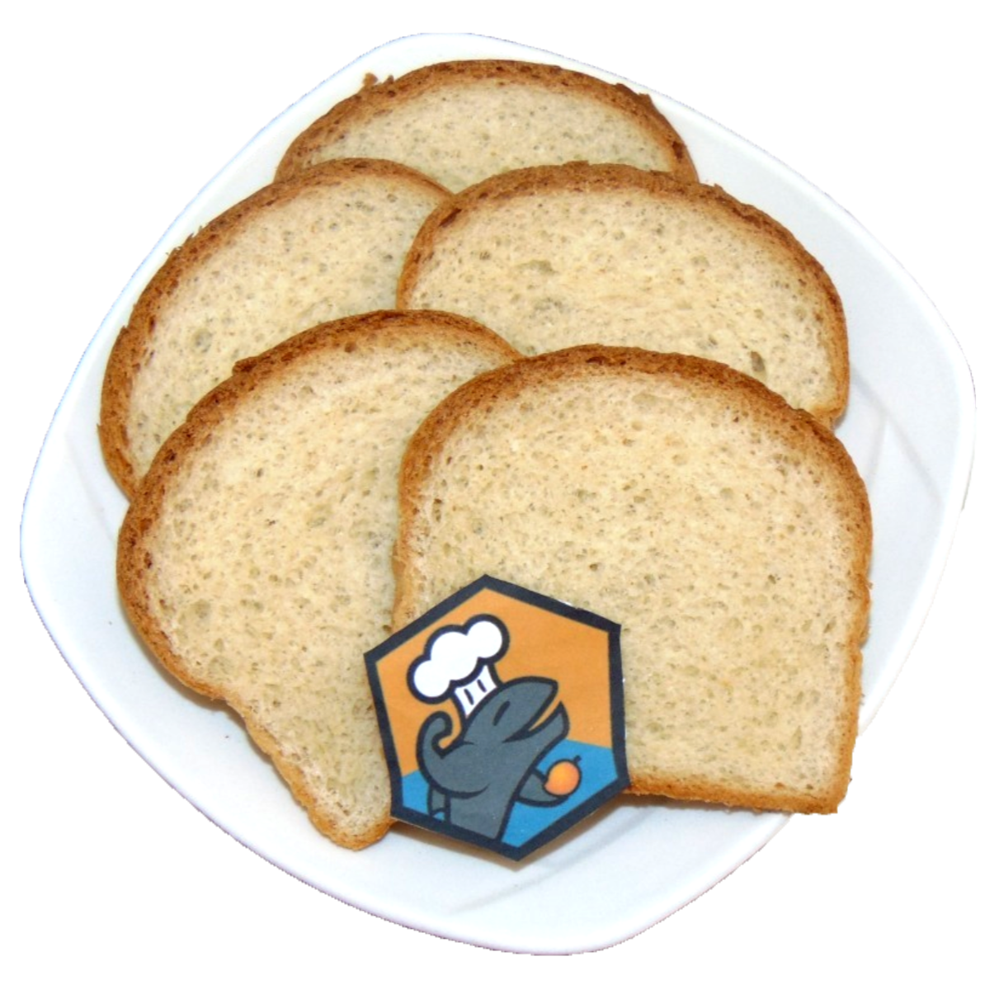
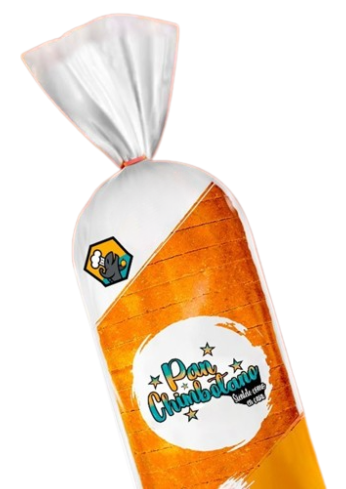

"En Áncash siempre hemos tenido problemas con la alimentación, especialmente en los pueblos más pequeños. Después de probar Pan Chimbotano, noté que me siento más saludable. Mi digestión ha mejorado, me siento más enérgica y, lo mejor de todo, sé que estoy cuidando mi corazón gracias a los nutrientes que tiene. Este pan es una excelente opción para los adultos mayores de nuestra región."
¿Qué es PAN CHIMBOTANO?
Pan Chimbotano es un proyecto creado por estudiantes de la Universidad Nacional del Santa.
Con el objetivo de ofrecer un pan saludable, rico en Omega-3 y nutrientes esenciales como proteínas, hierro, calcio, fibra y sales minerales. Este pan es una opción nutritiva, accesible y versátil para mejorar la alimentación de todos, ayudando a promover una dieta balanceada y saludable.

¿Quiénes Somos?
Integran el equipo:
Grados Cueva Claudia Gabriela (Ingeniería Agroindustrial), Cristin Emely Maza Alva (Ingeniería Agroindustrial), Almendra Celeste Alejo Ibañez (Comunicación Social) y Diego Ignacio Montes Chiguala (Ingeniería de Sistemas e Informática), todos estudiantes de la Universidad Nacional del Santa.

Pan de molde enriquecido con harina de cáscara de mango y concentrado proteico. Pan Chimbotano - 650 gr
S/ 10.00
Descripción:
Pan Chimbotano aporta alto contenido en fibra dietética, omega 3, es muy rico en hierro y calcio.
Testimonios
"Soy de Áncash y siempre he sido cuidadosa con lo que como, pero con los años es más difícil encontrar alimentos que realmente me ayuden. Pan Chimbotano me ha dado la oportunidad de disfrutar de un buen pan, pero con los beneficios de ser saludable y nutritivo. Lo recomiendo mucho porque me da energía y sé que es bueno para mi corazón."
"En mi comunidad, muchos de los adultos mayores tenemos problemas de salud por no consumir los nutrientes adecuados. Descubrí Pan Chimbotano gracias a un familiar y me sorprendió el cambio. Me siento más ligera, con más energía y lo mejor es que sé que estoy cuidando mi salud. ¡Es un pan que no solo sabe bien, sino que también hace bien!"
"Mi hija me trajo Pan Chimbotano hace unas semanas y lo he estado comiendo todos los días. Desde que lo consumo, siento que mi cuerpo responde mejor. No solo me ayuda con mi colesterol, sino que me da la confianza de que estoy comiendo algo que realmente nutre mi cuerpo. Es un producto que hace mucho bien a los mayores de nuestra región."
"Como abuela, siempre me preocupo por la salud de mis hijos y nietos, pero también me cuido a mí misma. Pan Chimbotano me ha permitido disfrutar de un pan delicioso y nutritivo, sabiendo que contiene todo lo que mi cuerpo necesita. En Áncash, muchos de nosotros sufrimos deficiencias nutricionales, y este pan es una forma excelente de mejorar nuestra salud."
"Siempre me ha costado encontrar productos saludables que me den la energía que necesito. Pan Chimbotano es un pan diferente, con Omega-3 y nutrientes que no encontraba en otros panes. Me siento más activo y con menos dolores articulares. Es el pan perfecto para los adultos mayores en Áncash que buscamos mejorar nuestra salud."
Contáctanos
Si tiene alguna pregunta o solicitud, no dude en contactarnos. Déjanos tus datos y te atenderemos en breve.